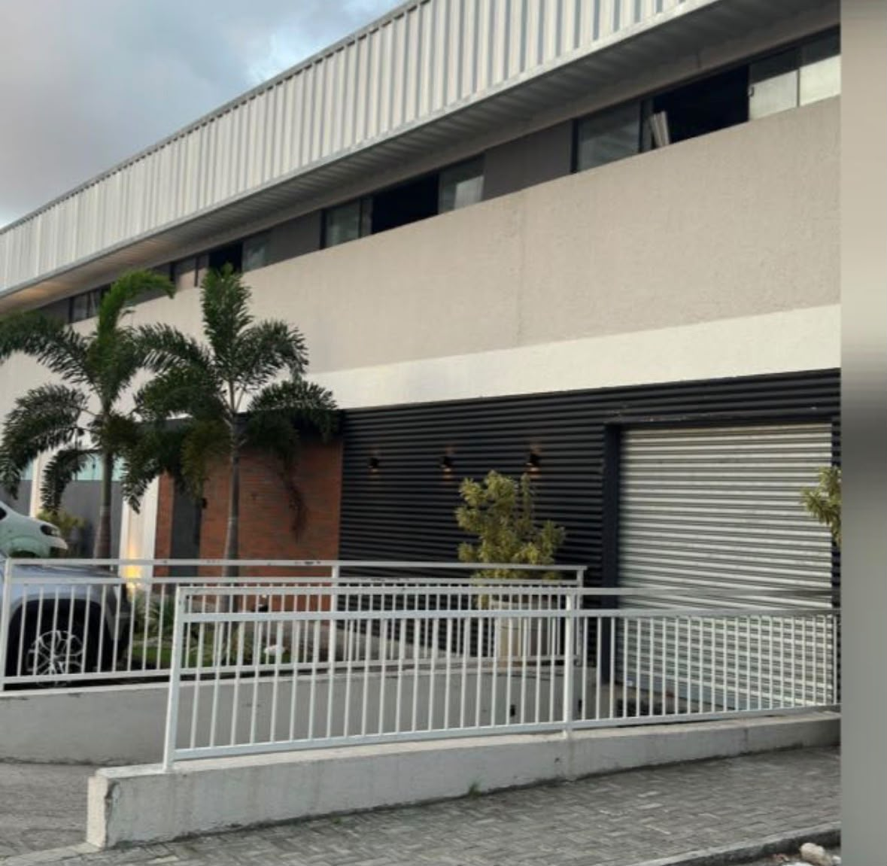
Uma história construída com paixão pela panificação.
A FFB Alimentos nasceu com o propósito de oferecer produtos artesanais de alta qualidade para cafeterias, hotéis, restaurantes e negócios que valorizam experiências únicas. Com ingredientes selecionados e processos cuidadosos, transformamos tradição, inovação e sabor em produtos que encantam clientes e fortalecem marcas.
+8
Anos de experiência100%
Ingredientes selecionadosFood
Service especializado
Qualidade garantida até o destino.
Da produção à entrega, cada etapa é cuidadosamente planejada para preservar frescor, qualidade e padronização. Nossa frota atende diariamente parceiros em toda a região, garantindo que os produtos da FFB Alimentos cheguem ao destino com a excelência que nossos clientes esperam.
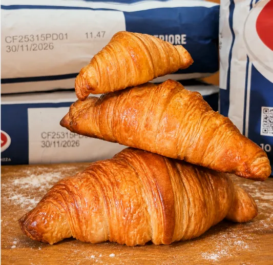
Croissant
3 Opções de tamanhos. Feito com farinha italiana e manteiga francesa, unindo leveza, crocância e sofisticação.
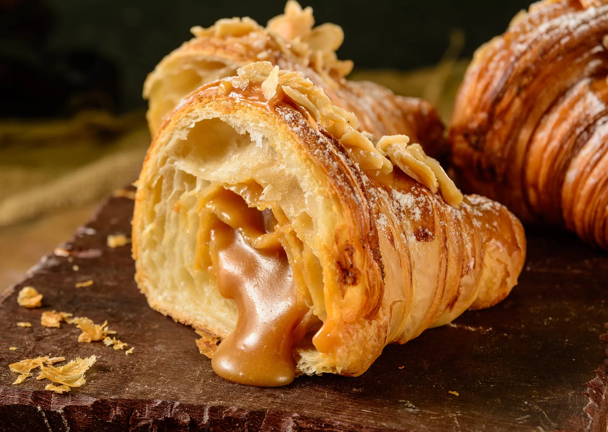
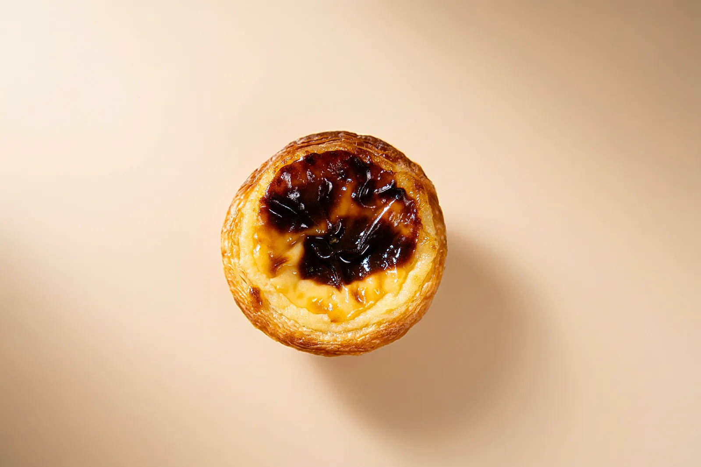
Pastel de Nata
A clássica receita portuguesa em uma combinação perfeita entre massa e creme.
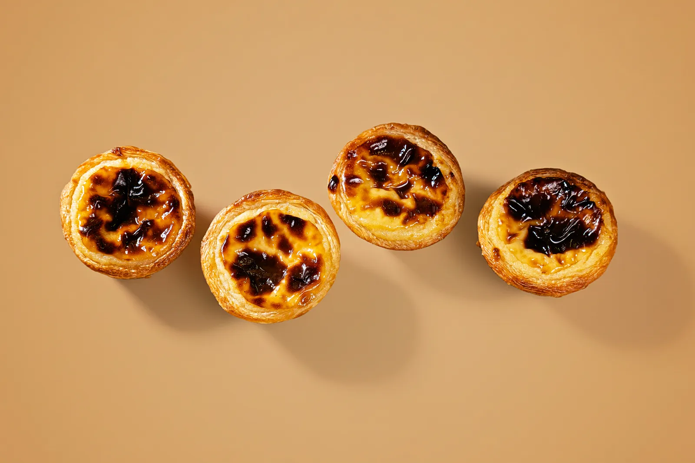
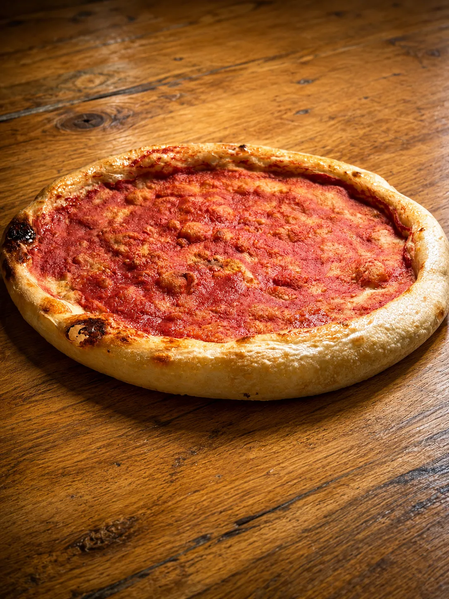
Pizzas Pré-assadas
Produzidas com farinha italiana e longa fermentação, prontas para receber os ingredientes da sua operação.
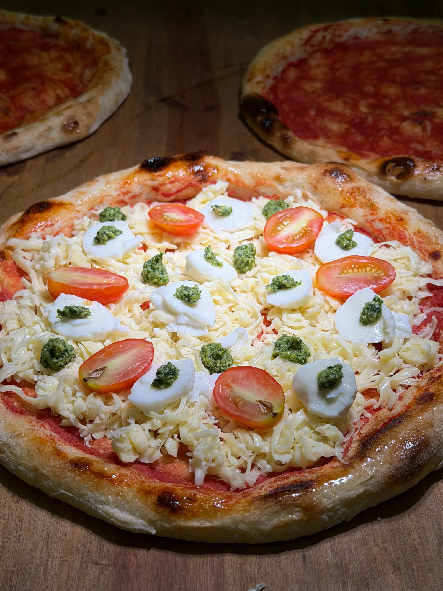
Pão Italiano
Casca crocante, miolo macio e sabor autêntico da fermentação natural.
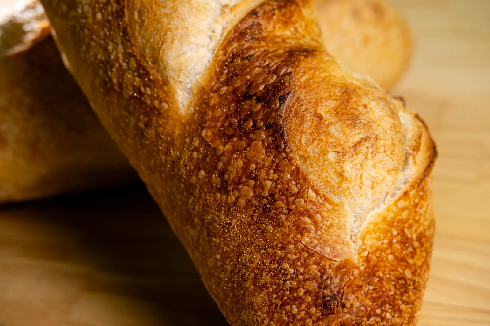
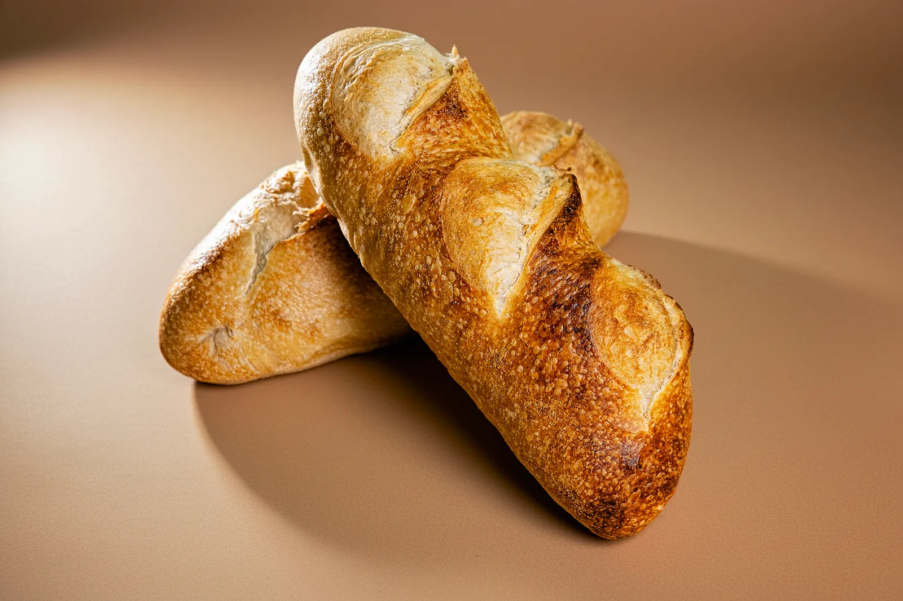
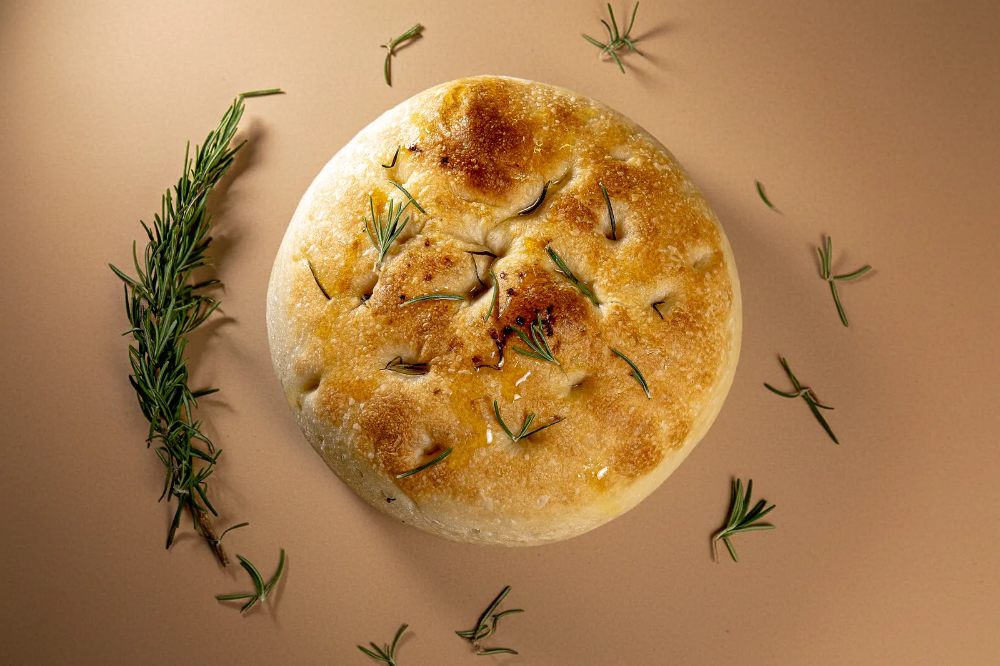
Focaccia
Receita clássica italiana com massa macia, aerada e sabor artesanal incomparável.
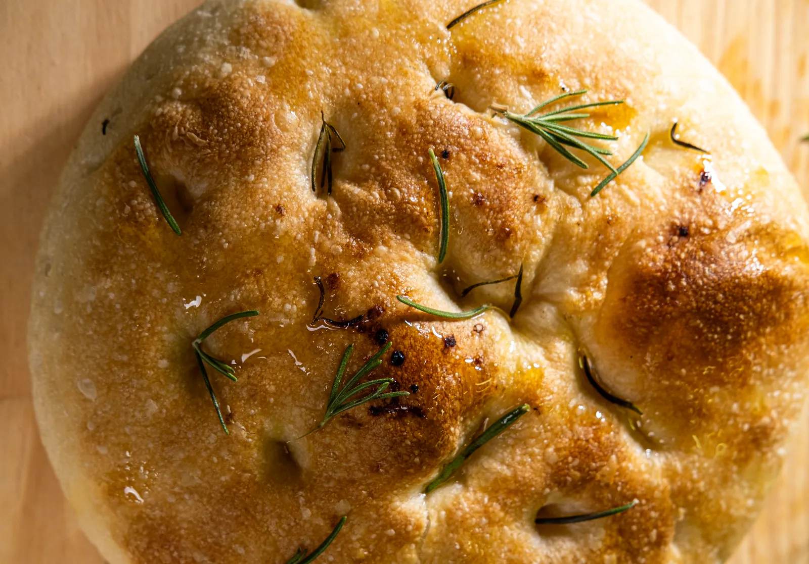
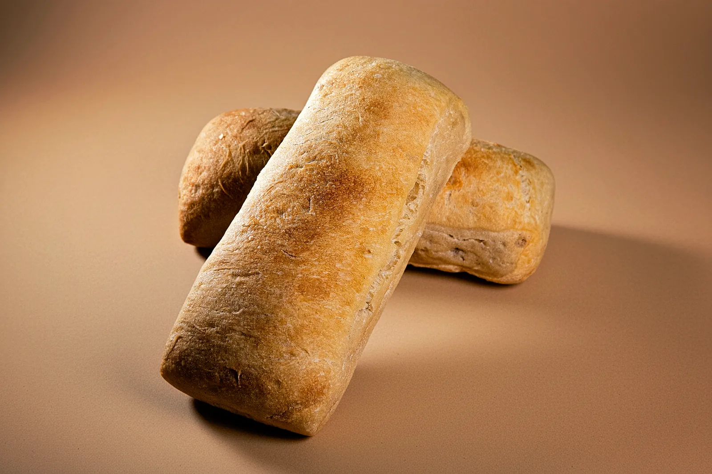
Ciabatta
Textura aerada e sabor delicadamente marcante, perfeita para diversas preparações.

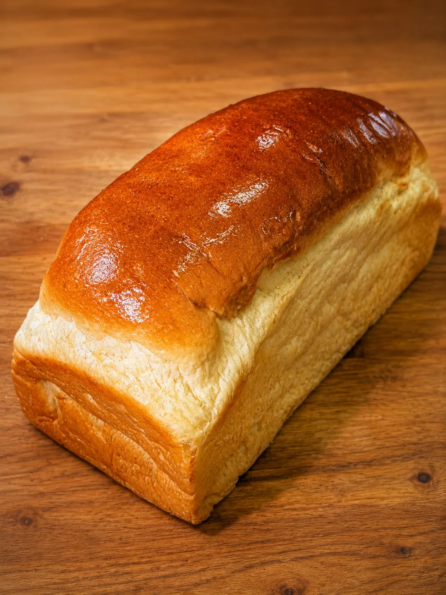
Pão Petrópolis
Textura extremamente macia, sabor suave e excelente apresentação.

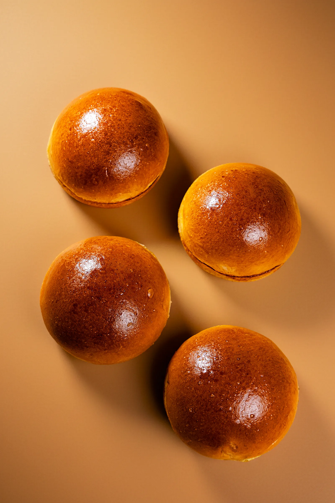
Hambúrguer Brioche
Massa artesanal e manteiga de primeira qualidade, proporcionando maciez e sabor marcante.
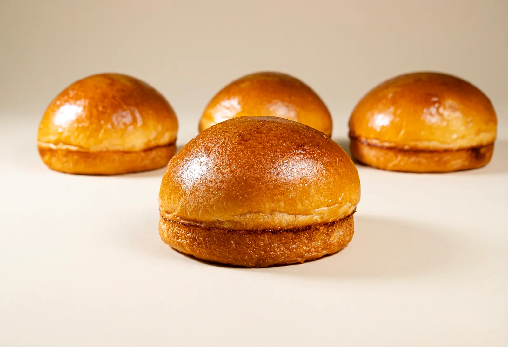


Gelatos
Com as opções de Leite, Doce de Leite e Pistache, temos cremosidade e sabor em perfeita harmonia.


Pão de Queijo
Crocante por fora, macio por dentro e irresistível.